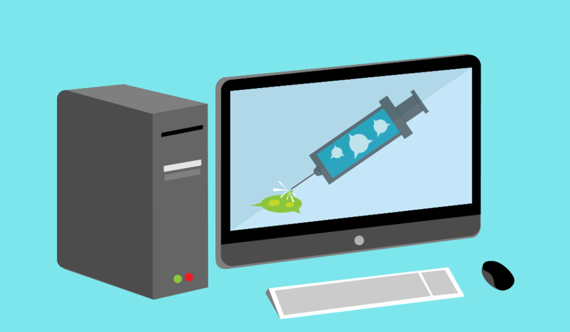
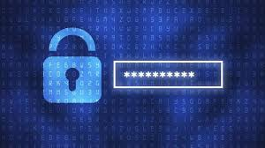
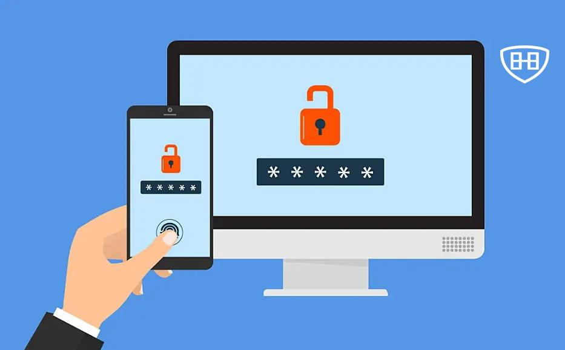

Estrategias de Prevención en Seguridad Informática
La prevención de amenazas es clave para proteger los sistemas de información. A continuación, se presentan algunas de las mejores prácticas y estrategias para prevenir ataques y mantener la seguridad en los sistemas informáticos.
Actualización Regular de Software
Las actualizaciones de software son fundamentales para corregir vulnerabilidades y mejorar la seguridad. Los desarrolladores emiten parches y nuevas versiones que solucionan problemas detectados en las aplicaciones o sistemas operativos.
Es recomendable automatizarlas actualizaciones siempre que sea posible para minimizar el riesgo de olvidos o retrasos.
Uso de Software Antivirus y Antimalware
El uso de software antivirus y antimalware es una defensa crucial contra amenazas como virus, troyanos y spyware. Estas herramientas detectan y eliminan amenazas en tiempo real, proporcionando una capa de protección constante.
Es importante mantener el software actualizado para que pueda identificar las amenazas más recientes.
Copias de Seguridad (Backups)
Las copias de seguridad regulares permiten restaurar la información en caso de que ocurra un ataque o una falla del sistema. Es importante realizar backups automáticos y almacenar las copias en ubicaciones seguras, como la nube o dispositivos externos.
De esta forma, se minimiza el impacto de incidentes como ataques de ransomware.
Políticas de Contraseñas Seguras
El uso de contraseñas seguras y únicas es una de las medidas más simples pero efectivas para proteger cuentas y sistemas. Las contraseñas deben ser lo suficientemente complejas, incluir una combinación de letras, números y caracteres especiales, y cambiarse periódicamente.
Además, se recomienda utilizar herramientas como gestores de contraseñas para almacenar credenciales de manera segura.
Autenticación de Dos Factores (2FA)
La autenticación de dos factores añade una capa adicional de seguridad al requerir dos formas de identificación antes de conceder el acceso. Esto generalmente incluye una combinación de algo que el usuario sabe (como una contraseña) y algo que posee (como un teléfono móvil o un token).
Esta medida es eficaz contra ataques de phishing y accesos no autorizados.
Formación en Conciencia de Seguridad
La formación continua en conciencia de seguridad para los empleados y usuarios es esencial para prevenir ataques que se aprovechan de errores humanos. Esto incluye identificar correos de phishing, evitar enlaces sospechosos y mantener prácticas seguras en línea.
El personal informado es la primera línea de defensa contra muchas amenazas cibernéticas.